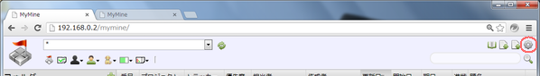
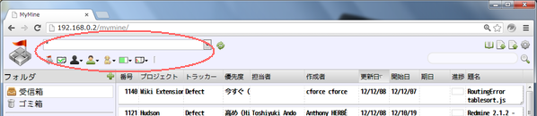
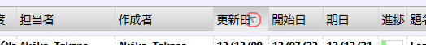
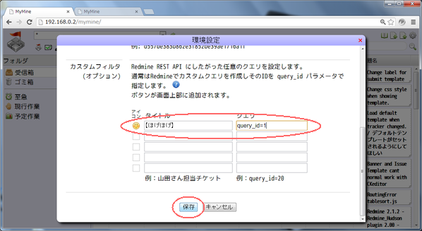
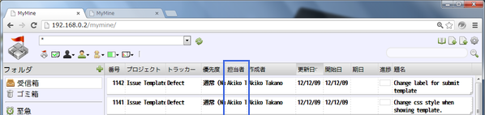
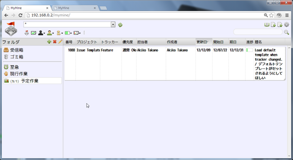
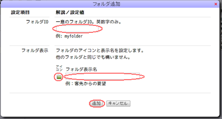
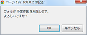
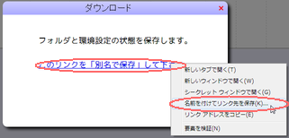

MyMine ヘルプ
目次
はじめに
MyMine は Redmine のチケットを見やすく表示および管理するためのWebアプリです。
Redmine の REST 機能を使用する外部プラグインとして動作します。
動作環境
| Webサーバ: | Apache推奨。本体はHTMLコンテツなのでサーバは選びません。 |
| ブラウザ: | Chrome推奨。HTML5対応のブラウザなら動くと思いますが未検証です。 |
導入
Redmineと同じサーバへの導入
配布アーカイブ内の mymine/ ディレクトリを Redmine をホストしている
Webサーバにコピーしてブラウザからアクセスできるようにするだけです。
コピー先はルート以外でも構いません。
Redmineと異るサーバへの導入
Redmineをホストしているサーバが自身の管理化に無い場合は、別の
Webサーバに導入する事ができます。
この場合、MyMine を導入するWebサーバは Redmine のサーバへのリバースプロキシとして
動作する必要が有ります。
Apacheの設定例
Apacheを使用したプロキシサーバの設定例を示します。
Apacheのインストールは省略します。
httpd.conf に以下の設定を追加します。
https://www.redmine.org/ がRedmineのURLです。
目的のURLに読み替えて下さい。
LoadModule proxy_module libexec/apache22/mod_proxy.so
LoadModule proxy_connect_module libexec/apache22/mod_proxy_connect.so
LoadModule proxy_http_module libexec/apache22/mod_proxy_http.so
SSLProxyEngine On
ProxyPass /redmine https://www.redmine.org/
ProxyPassReverse /redmine https://www.redmine.org/
この例の場合、環境設定の「Redmineのパス」に /redmine を、
「Redmineの絶対パス」に https://www.redmine.org/ を
設定します。
環境設定
1. ブラウザでMyMineのページを表示します。
2. 画面右上の  をクリックし環境設定ダイアログを表示します。
をクリックし環境設定ダイアログを表示します。

3. 画面の説明にしたがって項目を設定します。(オプション)となっている項目は任意です。

4.「保存」ボタンをクリックします。(画面最下部に有ります。)

APIアクセスキー
環境設定のAPIアクセスキーは Redmine がユーザを特定する為の物で
Redmine の個人設定画面からから取得できます。

機能
チケットの取得
Redmine からチケットを取得して表示するには以下の操作をします。
 受信箱 をクリックします。
受信箱 をクリックします。 をクリックします。
をクリックします。

ページの表示直後には既にこの状態になっています。
フィルタ条件
取得するチケットを制限するにはフィルタ条件を指定してからチケットを取得します。

- 上段のセレクタはプロジェクトを選択します。
 は自分が担当になっているチケットのみとします。
APIアクセスキーが設定されていない場合、機能しません。
は自分が担当になっているチケットのみとします。
APIアクセスキーが設定されていない場合、機能しません。- は終了チケットを含めます。
デフォルトでは終了チケットは含みません。
 は選択した担当者のチケットのみとします。(*1)
は選択した担当者のチケットのみとします。(*1) は選択した作成者のチケットのみとします。(*1)
は選択した作成者のチケットのみとします。(*1) は選択したトラッカーのチケットのみとします。(*1)
は選択したトラッカーのチケットのみとします。(*1) は選択したステータスのチケットのみとします。(*1)
は選択したステータスのチケットのみとします。(*1) は選択した優先度のチケットのみとします。(*1)
は選択した優先度のチケットのみとします。(*1)
(*1)
Redmineの現在のREST機能ではこれらの選択項目の一覧が予め取得できない為
取得済みチケットから合成しています。
したがって全ての選択項目が選べる訳では有りません。
ソート条件
取得するチケットの順番はソート条件を指定してからチケットを取得します。
ソート条件はチケット一覧のヘッダをクリックする事により指定できます。
同じヘッダをクリックすると昇順／降順が入れ替わります。
初期状態では更新日の降順となります。

ソート条件の指定された項目には 昇順=△／降順=▽ のマークが付きます。

カスタムフィルタ
カスタムフィルタは Redmine の REST 機能が提供する任意のクエリをユーザが定義して使用できます。
定義の仕方：
- 画面右上の をクリックし環境設定ダイアログを表示します。
- カスタムフィルタの項目のアイコンとタイトル、クエリパラメータを設定します。
- 「保存」ボタンをクリックします。(画面最下部に有ります。)

フィルタ条件にアイコンが追加されます。

RedmineのカスタムクエリのIDは Redmine でカスタムクエリを表示した時のURLから分かります。

※
カスタムフィルタと他のフィルタ条件、ソート条件を併用する事はできません。
チケットの表示
項目の幅の調整
チケット一覧の各項目の幅はヘッダの境界線をドラッグする事により変更できます。
最小幅は4pxで0にすることはできません。

主要な項目以外を最小化した結果です。

項目順の入れ換え
チケット一覧の各項目の順番はヘッダをドラッグする事により変更できます。

適当に順番を入れ換えた結果です。

フォルダ
フォルダは Redmine のチケットのコピーを格納します。
格納したチケットはブラウザのlocalStrageに保存されるためサーバ側のデータに影響はありません。
チケットの移動
フォルダにチケットを移動するにはチケットをフォルダにドラッグ＆ドロップします。
CTRL+クリック で複数のチケットを選択してから移動すると一度に移動できます。

ドロップのフォルダが選択されフォルダ内のチケットが表示されます。
フォルダに表示される数字は (未読チケット数/チケット数) です。
(※チケットをダブルクリックして詳細画面を表示すると既読になります)

チケットは常に移動になります。
移動元のフォルダからはチケットは削除されます。
フォルダの追加/削除/編集
フォルダの操作はフォルダのヘッダにあるボタンを使用して行います。

| ボタン
| 説明
|
 |
フォルダの追加。フォルダ編集用のダイアログが表示されます。
フォルダID、アイコン、表示名を設定して「追加」をクリックしてください。
|
 |
選択中のフォルダの削除。確認ダイアログが表示されます。
削除してよければ「はい」をクリックしてください。
|
 |
選択中のフォルダの編集。フォルダ編集用のダイアログが表示されます。
アイコン、表示名を変更して「保存」をクリックしてください。
|
フォルダ編集ダイアログ：

フォルダ削除確認ダイアログ：

システムフォルダ
以下はシステムで使用する特殊なフォルダです。
| フォルダ
| 説明
|
| 受信箱 |
Redmineから取得したチケットを一時的に格納するフォルダです。 |
 ゴミ箱 ゴミ箱 |
廃棄チケット用です。ページがリロードされるとチケットは無くなります。 |
検索
現在の所、Redmine の REST に検索機能が未実装の為、使用できません。
数値のみを入力した場合にチケット番号として検索する機能のみが提供されています。
データのエクスポートとインポート
MyMine のフォルダ情報、環境設定は全てブラウザのlocalStrageに保存されます。
バックアップおよび他のPCへのデータ移行の為にエクスポートとインポートの機能を提供します。
データのエクスポート
1.  ボタンをクリックします。
ボタンをクリックします。

2. ダイアログのリンクを右クリックして別名で保存して下さい。

保存データの形式はJSON形式です。
データのインポート
1.  ボタンをクリックします。
ボタンをクリックします。

2. ダイアログの「ファイルを選択」をクリックしてエクスポートしたデータを選択してください。

※インポートすると古いデータは全て削除されます。
以上